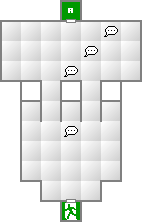
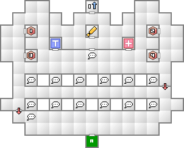
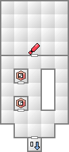

おそらく画廊ラダーでハイレグアーマーが売られているはず。火炎無効は次のボス戦で役に立つので購入しておこう。
画廊ラダーでは、ある相性を無効化し、反対の相性に弱くなるような防具が多々売られるようになるが、ボスの所持特技を見て、弱点を突かれない上に無効化できるなら積極的に装備していこう。このゲームで生き残る為に非常に重要なことである。
というわけで、相性付きの防具は間違っても手放さないように。同じ相性で性能が劣るならこの限りではないが。
ここではクイズに解答すればあっと言う間にボスまでたどり着ける。アイテムを回収してさっさと進もう。クイズの解答は以下の通り。
ここのボスはマハ・ラギとマハ・ザンを使用してくるので、火炎か衝撃に弱い仲魔は出さないほうがいい。もしラク・カジャ所持の堕天使セエレがいるなら、地霊ノッカーと合体させてラク・カジャ所持の鬼女アチェリか、妖精ピクシーか妖精ペナンガルと合体させて、ラク・カジャ所持の天使エンジェルを作成しよう。
妖鬼アズミが残っているなら、鬼女アチェリを仲魔にして地霊コロポックルを作るのもいいだろう。コロポックルはデフォルトでタル・ンダを所持している。
| 能力 | LV20 HP578 MP76 力07 知05 魔08 耐09 速05 運05 |
|---|---|
| 特技 | マハ・ラギ マハ・ザン 高揚の歌 バクテリオ・ワン |
| ショートジャブ |
| 火炎 | 氷結 | 電撃 | 衝撃 | 破魔 | 呪殺 | 万能 |
|---|---|---|---|---|---|---|
| 精神 | 神経 | 魔力 | 打撃 | 斬撃 | 技 | 銃撃 |
| 100 | 100 | 100 | 100 | 無効 | 無効 | 100 |
| 無効 | 無効 | 無効 | 100 | 100 | 100 | 100 |
マハ・ラギとマハ・ザンは、共にラク・カジャ無しだとかなりのダメージを受けてしまう。ネミッサはハイレグアーマーを装備していればマハ・ラギは無効化することができるが、堕天使セエレなど弱点を突かれた場合はほぼ即死してしまう。
基本的にボス戦はカジャ・ンダ魔法をできるだけかけることから始まる。その間主人公は攻撃などせずに常に回復に回ろう。ネミッサも同様だ。こちらの防御力を上げるか敵の攻撃力を下げて、こちらの被ダメージが少なくなったら少しずつ攻撃に手を回していけばよい。4ターン目までには補助魔法をかけ終えているのが一番理想的だ。そのため、補助魔法は一体の仲魔に集中して覚えさせるなどといったことが無いようにしたい。これは非常に無駄である。
それと、ネミッサは15レベルで全体回復のメ・ディアを覚える。15に近いなら覚えてから挑むと大分楽になるだろう。
無事ムーウィスを倒すと「バックアッパー」を入手することができる。これは2メモリ消費するが、どこでもセーブできるようになる優れもの（通常は中断で、ロードすると中断データは消える）。
ハッカーズはセーブポイントがある程度点在しているとは言え、ダンジョンの進行に少々時間がかかるゲームなので、不意の全滅でプレイ内容を無駄にしないためにも入れておきたい。
以降、パラダイムＸ内に実体化することができるようになり、現時点ではカジノが利用できるようになる。カジノの景品には通常では入手できないものから、入手するのに非常に手間がかかるものが揃っているので、お金とコインに余裕があるなら積極的に利用したい。
オススメは歓喜の寝具。所持しているだけで3Dダンジョン移動時にパーティーのHPが回復する優れものだ。現金だけで購入しようとするなら￥50000となる。もう少し経つとゲーム進行とは関係ないイベントが発生して￥50000を入手できるので、その時に交換するとよいだろう。


クイズに解答しないと2階へ昇れない。

| 妖魔ヴォジャノーイ(9) | 堕天使セエレ(10) | 邪龍チョトンダ(12) |
| 妖鳥ハーピー(9) | 凶鳥オンモラキ(8) | 妖鬼アズミ(8) |
| 鬼女アチェリ(12) | 幽鬼オバリヨン(11) | 悪霊クイックシルバー(10) |
| 妖樹ジュボッコ(10) |